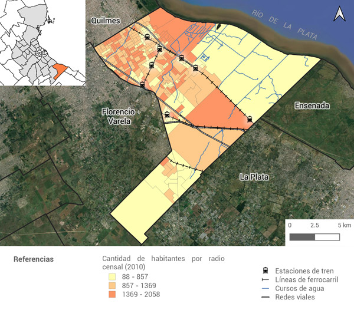

Partido de Berazategui
El partido de Berazategui se ubica al sudeste de la Region Metropolitana de Buenos Aires, limitando al norte con el partido de Quilmes, al oeste con el partido de Florencio Varela, al sur con los partido de La Plata y Ensenada y al este con el Rio de La Plata. EL mismo orma parte del segundo cordon del Gran Buenos Aires y se comunica con las principales ciudades del sur del conurbano a traves del Ferrocarril General Roca y la Autopista Buenos Aires - La Plata.
El partido de Berazategui se ubica al sudeste de la Region Metropolitana de Buenos Aires, limitando al norte con el partido de Quilmes, al oeste con el partido de Florencio Varela, al sur con los partido de La Plata y Ensenada y al este con el Rio de La Plata. EL mismo orma parte del segundo cordon del Gran Buenos Aires y se comunica con las principales ciudades del sur del conurbano a traves del Ferrocarril General Roca y la Autopista Buenos Aires - La Plata.
El partido de Berazategui se ubica al sudeste de la Region Metropolitana de Buenos Aires, limitando al norte con el partido de Quilmes, al oeste con el partido de Florencio Varela, al sur con los partido de La Plata y Ensenada y al este con el Rio de La Plata. EL mismo orma parte del segundo cordon del Gran Buenos Aires y se comunica con las principales ciudades del sur del conurbano a traves del Ferrocarril General Roca y la Autopista Buenos Aires - La Plata.
El partido se divide en nueve localidades, siendo la localidad de Berazategui su cabecera. Dentro de ella se encuentra el Edificio Municipal, y otros espacios culturales importantes como el Complejo Municipal El Patio, el Centro Cultural Rigolleau y el Club Ducilo. Las demas localidades que lo componen son Berazategui Oeste, Sourigues, Ranelagh, Villa España, Platanos, Hudson, Juan Maria Gutierrez y el Centro Agricola El Pato, este ultimo ha crecido en los ultimos años adquiriendo un importante desarrollo urbanistico.Beneficios Ambientales
La ordenación de las ciudades modifica el escenario natural creando microclimas extremos y fatigosos para los habitantes urbanos, puesto que la evaporación del suelo, las superficies de edificación y pavimentos urbanos, al ser de proyección plana, atraen y reproducen las radiaciones solares.
Leer MásBeneficios Sociales
Desde el punto de vista social, ciertos árboles pueden tener una especial significación para los ciudadanos. De este modo, se visualiza al árbol como un elemento que forma parte de la impronta cultural de su espacio de frecuente visita.
Leer Más
Beneficios Economicos
La evidencia ha demostrado que los parques públicos aumentan el valor de las propiedades inmobiliarias adyacentes. Los parques y otros espacios verdes fomentan también la actividad económica de los establecimientos comerciales.
Leer MásBeneficios Culturales
Las características de los elementos de la naturaleza que brindan a las personas la oportunidad de obtener bienes o beneficios culturales.
Leer Más